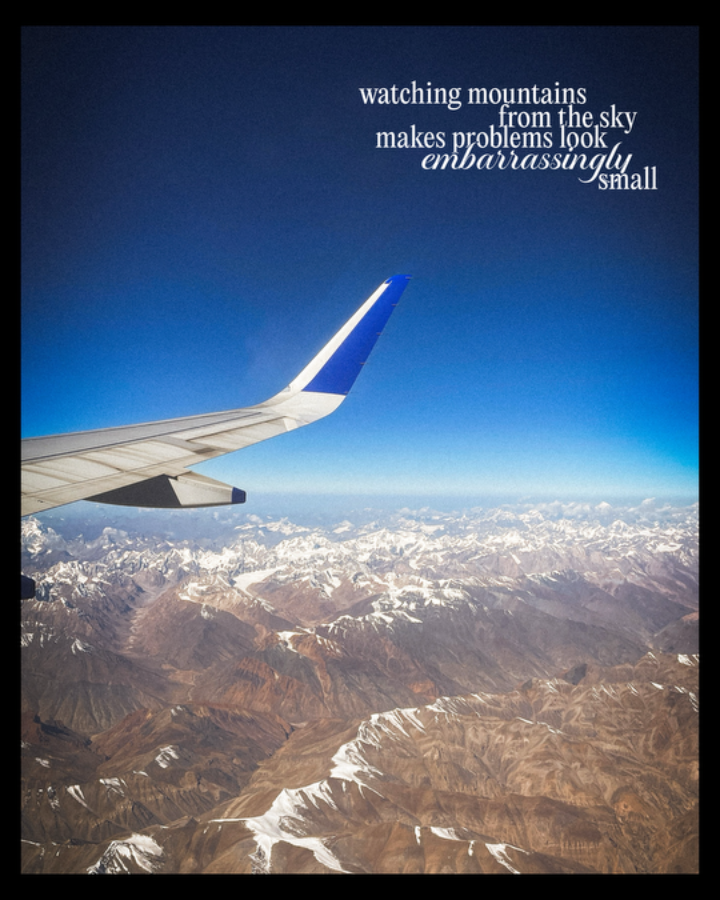
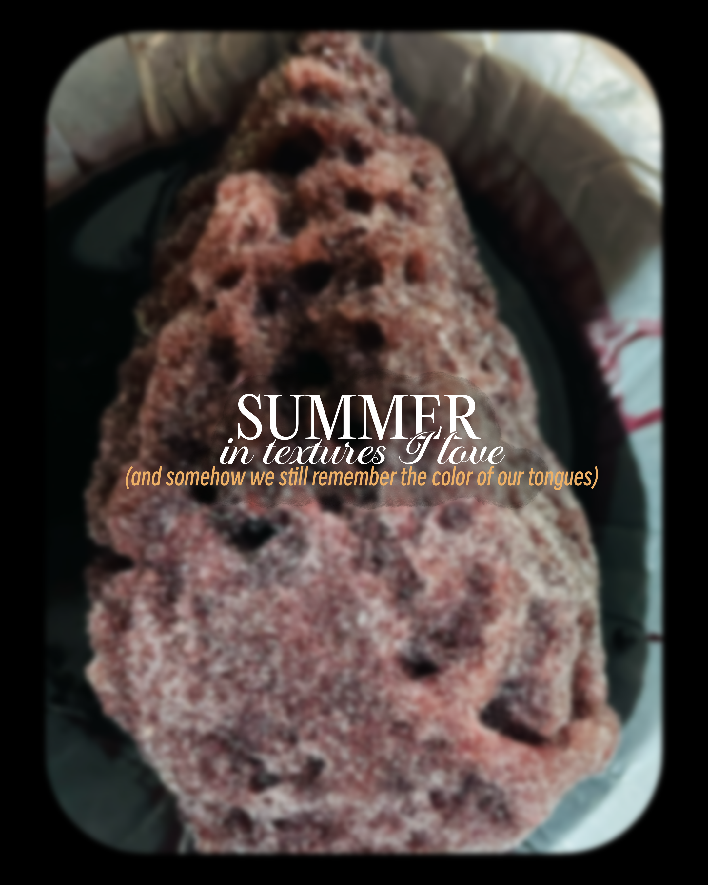

Umang
Kala
I used to paint. That never stopped — only the canvas changed. Today, I work with skies instead of watercolours, cities instead of sketchbooks, and moments instead of brushstrokes. As a visual storyteller, I collect colours, textures and observations that often go unnoticed, then arrange them the way an artist builds a composition — carefully, intentionally, and always in service of a story.


How I
build
Stories
An artist doesn't begin with everything they see. They begin with what deserves attention. I bring that same instinct to storytelling. Every story starts with a spark — a colour that keeps appearing, a texture that carries a memory, or a way of looking that changes what the scene becomes. Most stories emerge from one. The most memorable ones are shaped by all three.
A place remembered
as a single hue.
Before I plan a story, I ask: what colour is this place? Not literally - I mean the colour of the feeling. Banaras isn't just orange; it's the specific kesariya of marigolds stacked in a temple doorway at six in the morning.
Once I find that colour, the whole story organises itself around it. Everything I photograph asks the same question: does this belong to that hue?
View all colours ↗
Close enough
to almost feel it.
Textures are the sensory layer. They're what you remember after the landmark has faded — the stickiness of a gola on a May afternoon, the way mango juice catches the light, the grain of a temple stone worn smooth by a thousand hands.
I stay close. I get in the way of the shot most photographers avoid — the one where there's nothing grand in the frame, just something that makes you swallow.
the harder I work to make you feel it."



How I look
at the world.
Most photographers search for a view. I search for a way of seeing. Whether it's lying still in the grass at Bandipur, wandering Marine Drive past midnight, or watching cities shrink beneath a plane window, I'm drawn to perspectives that shift the meaning of a place. Because sometimes changing where you stand changes what the story becomes.
The details most people walk past. Small gestures, fleeting moments and quiet scenes that often become the heart of a story.
The thoughts a place leaves behind. Not just what was seen, but what it made me feel, remember, question or return to.
A different way of looking. The same place can tell entirely different stories, depending on where you choose to see it from.
View all lenses ↗Let's make
people feel
something.
Whether the story is inspired by a colour, a season or a single quiet observation — the goal is always the same. Brand stories, editorial series and slow visual essays welcome.